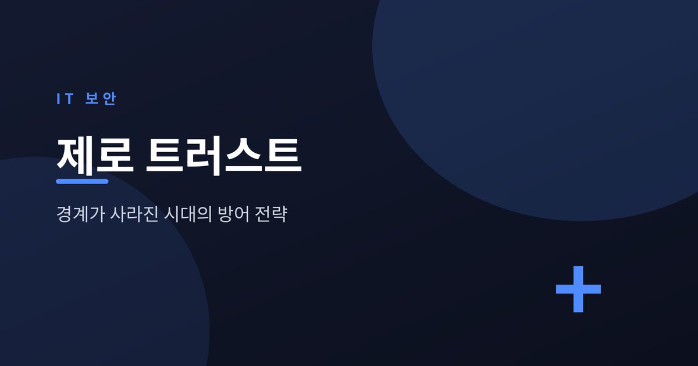
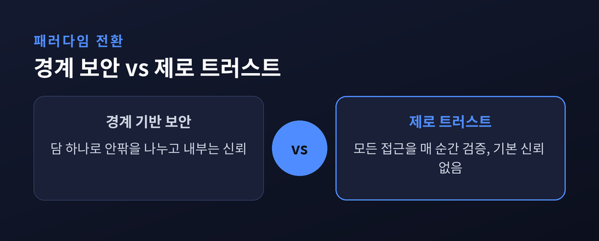
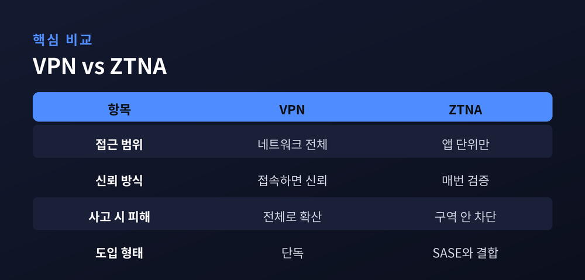
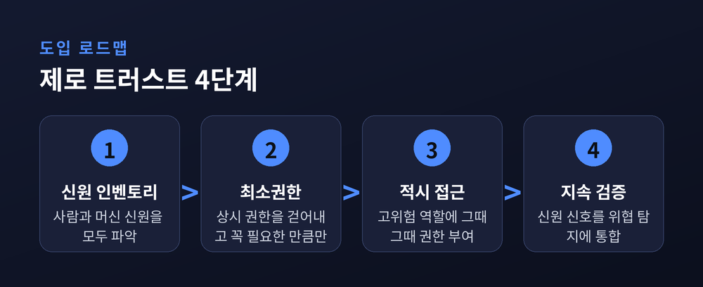

경계가 사라진 시대의 새로운 방어 전략

이번 글에서는 요즘 보안의 화두인 제로 트러스트(Zero Trust)를 정리해 보겠습니다. 이름은 자주 들리지만 정작 무엇이 달라지는지는 모호하게 남아 있는 개념입니다. 어렵지 않게, 그러나 정확하게 짚어보겠습니다.
예전의 보안은 성벽을 쌓는 일에 가까웠습니다. 담을 높이 두르고, 안으로 들어온 사람은 일단 믿었습니다.
지금은 그 담이 사라졌습니다. 클라우드와 원격근무, 모바일이 퍼지면서 '안'과 '밖'의 경계 자체가 흐려졌기 때문입니다. 직원은 카페에서 접속하고, 데이터는 외부 클라우드에 흩어져 있습니다. 지킬 담이 어디인지조차 말하기 어려운 시대입니다.
그래서 등장한 것이 제로 트러스트입니다. 핵심 명제는 짧습니다. "절대 신뢰하지 말고, 항상 검증하라." 네트워크 안에 있든 밖에 있든, 모든 접근 요청을 매번 인증하고 허가한다는 뜻입니다.
여기에는 세 가지 전제가 깔려 있습니다. 기본값으로 아무도 믿지 않고, 이미 뚫렸다고 가정하며, 한 번이 아니라 계속 검증한다는 것입니다. 얼핏 야박해 보이지만, 담이 없는 환경에서는 이 편이 오히려 현실적입니다. 한 번 통과했다고 계속 믿어주는 순간, 그 틈이 그대로 약점이 되기 때문입니다.

가장 자주 나오는 질문입니다. 재택근무 때 쓰던 VPN과 제로 트러스트는 어떻게 다를까요.
VPN은 일단 접속하면 회사 네트워크 '전체'로 들어가는 문을 열어줍니다. 열쇠 하나로 건물 전체를 도는 셈입니다.
반면 제로 트러스트 방식(ZTNA)은 네트워크가 아니라 애플리케이션 단위로만 접근을 허락합니다. 필요한 방 하나의 문만 그때그때 열리는 구조입니다.
차이는 사고가 났을 때 드러납니다. 한 업계 조사에서는 기업의 65% 이상이 매년 VPN 관련 보안 사고를 겪는다고 합니다. 자격증명이 새면 네트워크 전체가 위험해지기 때문입니다. 열쇠 하나를 잃어버렸을 뿐인데 건물 전체를 다시 잠가야 하는 셈입니다.
2026년 현재 대부분의 기업은 이 ZTNA를 SASE라는 클라우드 보안 묶음과 함께 도입하고 있습니다. SASE는 방화벽, 보안 웹 게이트웨이, 데이터 유출 방지 같은 기능을 클라우드에서 하나로 묶어 제공합니다. 접근 통제와 보안 기능을 따로 두지 않고 한자리에서 다루는 방식인 셈입니다.

미국 표준 문서 NIST SP 800-207이 뼈대를 정의합니다. 접근을 판단하는 '두뇌'(정책 결정 지점)와 그 판정을 자원 앞에서 집행하는 '문'(정책 시행 지점)이 나뉘어 있습니다.
판단의 재료는 신원과 기기 상태, 위험 신호입니다. 그중에서도 신원이 가장 중요한 신호로 꼽힙니다. 침해 사고의 상당수가 탈취된 자격증명에서 비롯되기 때문입니다.
또 하나의 축은 마이크로세분화입니다. 네트워크를 잘게 쪼개 침해가 옆으로 번지는 것을 막습니다. 연결마다 '단 하나짜리 구역'을 만들어, 자격증명이 뚫려도 공격자가 내부를 활보하지 못하게 합니다.
최근에는 사람이 아닌 신원, 곧 서비스 계정과 API 토큰 같은 '머신 아이덴티티'가 새 과제로 떠올랐습니다. 기업 안에서 이런 신원은 이미 사람보다 훨씬 많고, 관리가 소홀한 곳이 많기 때문입니다.
Gartner 조사에 따르면 전 세계 조직의 63%가 이미 제로 트러스트 전략을 도입했습니다. 다만 대부분 환경의 절반 이하만 적용한 초기 단계라는 점은 함께 봐야 합니다. 방향은 분명하지만, 완성까지는 아직 갈 길이 남아 있는 셈입니다.

정리하면 이렇습니다. 제로 트러스트는 새로운 제품이 아니라 사고방식의 전환입니다. 담을 더 높이 쌓는 대신, 담이 없다고 인정하고 매 순간을 검증하는 쪽으로 방향을 튼 것입니다. 그래서 도구 하나를 사더라도 완성되지 않고, 조직의 습관이 바뀌어야 비로소 자리를 잡습니다.
"믿음을 기본값에서 빼는 것" — 결국 제로 트러스트가 말하는 것은 이 한 줄입니다.
경계가 사라진 시대에 무엇을 믿을 것이냐고 물으신다면, 저는 '검증된 이 순간뿐'이라고 답하겠습니다.